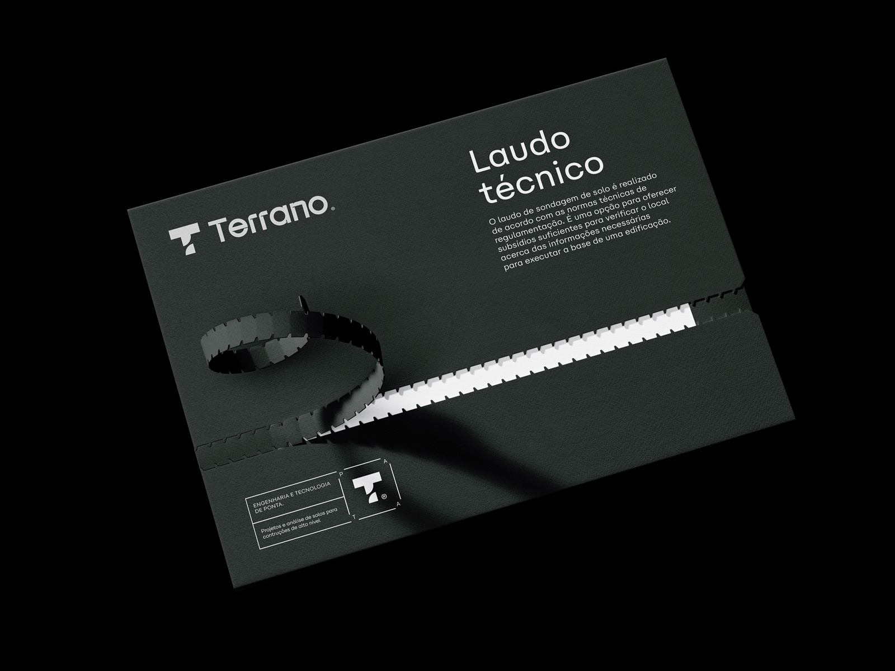

Controle tecnológico de concreto: qualidade que se comprova.
Moldagem, cura e rompimento de corpos de prova de concreto, graute e argamassa, com rastreabilidade por caminhão e relatórios periódicos para a sua obra.
O concreto que chega é o concreto que foi projetado?
O controle tecnológico responde essa pergunta com dados. Acompanhamos cada concretagem e garantimos que a resistência especificada pelo projetista está, de fato, na estrutura.
Abatimento (slump test)
Verificação da consistência do concreto fresco na chegada de cada caminhão, antes do lançamento.
Moldagem de corpos de prova
Moldagem e identificação dos CPs em obra conforme NBR 5738, com registro de nota fiscal e local de aplicação.
Ensaio de compressão
Rompimento dos corpos de prova nas idades de controle (ex.: 7 e 28 dias), conforme NBR 5739.
Graute, argamassa e blocos
Controle de alvenaria estrutural: ensaios de graute, argamassa de assentamento e blocos de concreto.
Relatórios por lote
Laudos de resistência com análise estatística por lote (NBR 12655) e relatórios mensais de acompanhamento.
Alertas e rastreabilidade
Cada caminhão rastreado da nota até o elemento concretado — e aviso imediato se algum resultado ficar abaixo do especificado.

Para construtoras que não abrem mão de segurança.
Atendemos obras de edifícios residenciais, comerciais e de infraestrutura que precisam de controle contínuo e documentação técnica confiável.
- 01Construtoras e incorporadoras
- 02Obras em alvenaria estrutural
- 03Obras públicas e de infraestrutura
- 04Fiscalização e auditoria técnica
Perguntas sobre controle tecnológico
O controle tecnológico do concreto é obrigatório?
Com que frequência vocês vão à obra?
Como recebo os resultados?
E se um resultado ficar abaixo do fck especificado?
Vamos acompanhar a sua obra?
Conte sobre a obra, o volume de concreto previsto e o cronograma de concretagens. Montamos uma proposta sob medida.
Chamar no WhatsApp- WhatsApp(45) 99937-1887
- E-mailcontato@terranoengenharia.com
- Instagram@terranoengenharia
- EndereçoRua Ali Osman, 222 — Jardim Panorama
Foz do Iguaçu — PR